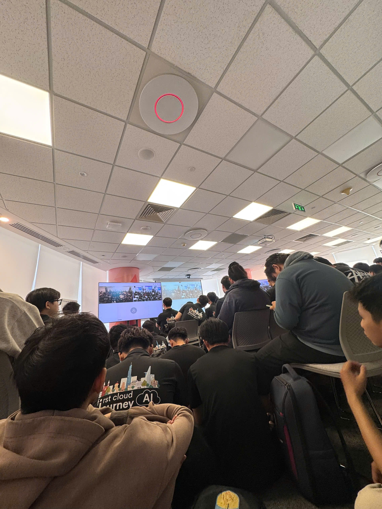

Event 1: AWS Community Day Vietnam 2026
- Event Name: HCM_FCAJ Community Day 2026 (FCAJ Community Day)
- Date & Time: Saturday, May 23, 2026 (09:00- 12:00)
- Location: AWS Vietnam Office, 26th & 36th Floor, Bitexco / MPlaza Building, Ho Chi Minh City, Vietnam
- Scale: Over 500 attendees (Fully packed main auditorium on 26th floor, live-streamed to 36th floor overflow area)
- Role: Student Intern / Attendee
Event Objectives
HCM_FCAJ Community Day 2026 is a large-scale tech gathering bringing together over 500 students, cloud engineers, and AI enthusiasts in Ho Chi Minh City. The primary goals of the event are:
- Share practical hands-on insights on the convergence of Cloud & Generative AI (GenAI), AWS cloud infrastructure optimization, and modern application development.
- Foster a strong networking environment between First Cloud AI Journey (FCAJ) students, experienced industry speakers, and AWS solution architects.
- Inspire continuous learning through real-world Hackathon experiences and enterprise cloud adoption case studies.
Key Presentation Highlights
The event featured 6 deep-dive technical sessions centered around two main pillars: Cloud Infrastructure and Generative AI.
1. Context Is Everything - Making AI Actually Work for You
- Speaker: Tinh Truong (Platform Engineer, GoTymeX)
- Key Topics:
- Analyzed why AI applications frequently suffer from hallucinations, attributing it to a lack of specific, relevant Context rather than weak LLMs.
- Introduced the “Prompt to Memory Pipeline” architecture, demonstrating dynamic context injection pipelines and long-term memory integration for practical enterprise AI workflows.
2. Friendly AI Assistant w/ Amazon Quick
- Speaker: Pham Ngoc Hai Anh (G-AsiaPacific Vietnam, AWS Community Builder)
- Key Topics:
- Addressed enterprise friction where business users waste time retrieving fragmented data across siloed systems.
- Introduced “Amazon Quick”, an AI assistant powered by Amazon Bedrock, featuring 40+ secure database connectors and intelligent web search.
- Demonstrated an automated PM assistant generating Minutes of Meeting (MoM), sending schedule reminders, and syncing developer roadmaps.
3. From Edge to Origin: CloudFront as Your Foundation
- Speaker: Nguyen Tuan Thinh (DevOps Engineer, First Cloud AI Journey)
- Key Topics:
- Solved traditional CDN cost unpredictability with a predictable fixed-price model combining Amazon CloudFront, AWS WAF, Route 53, and S3.
- Highlighted edge security mechanisms (AWS Shield, WAF, Mutual TLS, geo-blocking), Origin Failover setups, HTTP/3 (QUIC) support, and edge logic customizations using CloudFront Functions / Lambda@Edge.
4. 36 hrs with LotusHacks: Building UTMorpho from Idea to Reality
- Presenters: UTMorpho Team (LotusHacks 2026 Participants)
- Key Topics:
- Shared their 36-hour hackathon journey constructing “UTMorpho”, a Generative Design application.
- Detailed their Serverless stack: React SPA on S3 + CloudFront, API Gateway + Lambda + DynamoDB, powered by Amazon Bedrock to parse image sketches into live React UI code previews.
5. Non-Determinism of ‘Deterministic’ LLM Settings
- Speaker: Duc Dao (Solution Architect, Cloud Kinetics)
- Key Topics:
- Explained why commercial LLM API outputs remain non-deterministic even with
temperature = 0.
- Analyzed root technical causes: Non-associative GPU floating-point arithmetic during parallel execution and dynamic request batching.
- Proposed mitigation strategies: Majority Voting ensembles, self-hosted models with deterministic bounds, and JSON Mode / Regex output formatting.
6. Enterprise-Grade Multi-Agent System: The Case of Startup Credit Scoring
- Speaker: Vy Lam (Senior Business Systems Analyst, VPBank)
- Key Topics:
- Tackled credit scoring for startups lacking traditional financial history.
- Demonstrated how replacing a single LLM agent with a specialized Multi-Agent System (virtual credit committee) accelerated processing times from weeks to hours (95% faster) with high auditability.
Key Takeaways & Lessons Learned
-
Architectural & Cloud Infrastructure Mindset:
- Edge Security Optimization: CloudFront serves as a crucial edge defense layer (Security at Edge) to block DDoS attempts and offload traffic from backend origin servers, beyond merely caching static assets.
- Managing LLM Constraints: Understanding non-deterministic behavior enables developers to design robust fallback logic and strict output validation when integrating GenAI into backend APIs.
-
Community Spirit & Networking:
- Experiencing the incredible energy from over 500 passionate attendees across two event floors provided great motivation for my internship journey.
- Reaffirmed a “Business-First” mindset: Technology and AI must serve real business needs and optimize human workflows to deliver actual ROI.
Practical Application to Internship Project (NodeJ2Car)
- Edge Security & CDN: Applied CloudFront CDN distribution with S3 static hosting, integrated with AWS WAF and SSL/TLS (ACM) certificates to secure the React Frontend application.
- Asynchronous Workloads: Utilized decoupling concepts via Amazon S3 and SQS queues to buffer incoming webhook payloads and prevent main Express server congestion.
Event Photos
